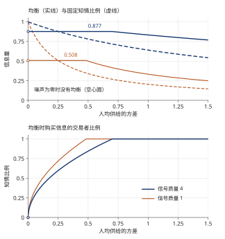

第 16 章 从价格中学习
Bond、Edmans 与 Goldstein（2012）综述了金融市场如何影响企业的行为，其中举了一位经理读自己公司股价的例子：经理宣布一项收购，市场的反应是负面的，他可能从这个反应中学到东西，进而取消这笔交易，作者称 Luo（2005）给出了这一渠道的证据（工作论文版）。在最可能发生学习的情形里，即交易不可逆、市场最有可能掌握经理所不知道的信息时，Luo 发现公告（announcement）收益偏低之后取消交易的概率高得多，而在更早的一篇论文里，Jennings 与 Mazzeo（1991）没有发现与这个假说相符的证据（据 Bond、Edmans 与 Goldstein 的转述；工作论文版）。这篇综述没有报告两项研究里的任何数字，本书也没有读过这两项研究。
综述认为，一位经理即使信息不比交易者少，价格里的信息也可以帮助他，条件只是他并非对决策相关的每一个因素都掌握完全的信息，这样外部人就可能持有一些对他有用的增量信息（工作论文版）。1
本章打开 1.7 节的树冠（canopy），讲信息如何进入价格。根模型（root model）假设不从价格学习（no learning from prices）：没有人通过价格去读别人知道什么。5.8 节的表 5.1 把这一条默认和其他默认一起列出，本章去掉它。本章还去掉表 5.1 记在本章名下的另外三条：去掉噪声交易者（noise trader），从而去掉外生交易对手（exogenous counterparty；16.5 节）；信息要花钱时，去掉无限注意（unlimited attention）和不从价格学习（16.4 节）；读价格的决策者改变现金流时，去掉单一外生事实（single exogenous fact；16.8 节）。Manski 的交易者把各不相同的信念（belief）向价格靠拢（averaging toward the price；16.1 节），他们去掉的是贝叶斯更新（Bayesian updating）和不从价格学习（表 5.2）。
16.1 从价格学习的三种方式
Hayek（1945）论证，当相关事实的知识分散在许多人手里时，价格可以协调（coordination）他们各自的行动。在他的例子里锡变得更稀缺了，锡的使用者不需要知道是新用途还是供应来源丢失造成的：他们只需要知道，自己过去消费的一部分锡现在在别处能得到更有利的使用，因此他们必须节约用锡。他把价格体系看作一种传递信息的机制，价格越僵硬，它运转得越不完善，它最重要的特点是运转时的知识的节约（economy of knowledge），即每个参与者要采取正确的行动，需要知道的东西有多么少。这篇论文用文字论证，没有模型，也没有数据。
读价格来了解别人知道什么的交易者，至少有三种做法，本书把它们并排列出（本书的判断；表 16.1）。
- 理性预期（rational expectations）。 交易者从价格推断别人知道什么，这需要模型的结构；按 21.1.3 节的说法，这是推断型高阶信念（inference-based higher-order belief），表 5.1 把它归在“不从价格学习”这一条下，记在本章（本书的判断）。Manski（2006）列出了证明市场可以有效的那些论证（例如 Grossman（1976）的定理 1）所假设的东西：交易者从共同先验（common prior）出发，观察到不同的私人信号（private signal），用贝叶斯法则（Bayes’ rule）把数据与信念结合起来，按后验信念交易，并在看到成交价格以后再次修正信念，所有这些结构都是共同知识（common knowledge）（工作论文版）。这条路需要把噪声交易者，即出于与信息无关的原因而交易的人，留在模型里（本书的判断；5.7 节），16.2 节至 16.5 节沿这条路走。
- 对过去价格的预测规则。 Hong 与 Stein（1999）的新闻观察者（newswatcher）只根据自己私下观察到的、关于未来基本面（fundamentals）的消息做预测，不以当前或过去的价格为条件；他们的动量交易者（momentum trader）只以过去价格变动的一些简单度量为条件，观察不到关于基本面的消息（工作论文版）。因此动量交易者按一条规则从价格学习，没有关于别人知道什么的模型（本书的判断），而且限于单变量的规则时，他们必然在长周期上造成过度反应（overreaction；工作论文版；10.7 节与 13.4 节；第 20 章）。
- 向价格靠拢。 在 Manski 的预测市场（prediction market）里，风险中性的价格接受者（price taker）信念各不相同，预算与修正后的信念无关，看到价格后修正信念，但仍留在价格的同一侧，均衡（equilibrium）价格就留在他们的先验信念所定的位置（工作论文版；5.7 节）。预测市场里的交易者是否、如何用价格数据来修正预期，Manski 写道，是一个开放的实证问题，他的论文无法回答，而在有风险厌恶（risk aversion）时，价格取决于信念、预算与风险偏好的联合分布（工作论文版）。
因此，读价格的交易者会不会把价格推得更远，取决于他们怎样读它：Manski 的向价格靠拢的交易者让价格留在原处，Hong 与 Stein 的动量交易者在长周期上把价格推过它的价值（工作论文版），而理性预期的学习可以让价格揭示知情者知道什么，只有在 16.2 节和 16.5 节的前提下才完全揭示（本书的判断）。
表 16.1 从价格学习的三种方式
| 方式 | 交易者用什么 | 交易者必须知道什么 | 原文模型里价格怎样 |
|---|---|---|---|
| 理性预期（16.2 节至 16.5 节） | 当前的价格和她自己的信号 | 模型的结构，以及价格怎样依赖信号，作为共同知识 | 在常绝对风险厌恶（constant absolute risk aversion）、正态变量、价格接受和信号免费给定的条件下：供给噪声（supply noise）消失时完全揭示，保留噪声时部分揭示（Grossman；Hellwig）；信号有成本时，在内点均衡（interior equilibrium）处，不论噪声多小，信息量都由成本决定（Grossman 与 Stiglitz） |
| 对过去价格的预测规则（第 20 章） | 过去价格变动的简单度量 | 对基本面什么都不需要知道，动量交易者看不到基本面的消息 | 单变量规则下，长周期上的过度反应（Hong 与 Stein；工作论文版） |
| 向价格靠拢（5.7 节） | 成交价格 | 按本书的读法，对别人的信息什么都不需要知道 | 风险中性的价格接受者、预算与修正后的信念无关、修正后的信念仍在价格的同一侧时，价格不变（Manski；工作论文版） |
行与列是本书的安排，每个格子概括它指向的那一节（本书的判断）。
本章处理集中交易与公开价格（centralized trading with public prices），其中每个交易者看到同一个价格（本书的判断）。分散市场（decentralized market）里只有一笔交易的双方看到它的价格，这在第 19 章；按订单流（order flow）定价的做市商（market maker），如 14.9 节，在第 17 章；反身性（reflexivity），即价格改变它所涉及的事实，在第 22 章。2
16.2 完全揭示与它的前提
Grossman（1976）的结果是：当交易者按理性预期的方式学习、又没有噪声时，均衡价格概括了市场里的全部信息，前提是 5.7 节与数学框 5.2 的八条，其中有常绝对风险厌恶，即对风险的厌恶不随财富而变，有正态分布、已知的总供给和价格接受。Grossman 称这种完美的聚合（aggregation）在加入噪声以后并不稳健（1.6.2 节），第 5 章给出了无噪声情形的三种病态，其中一种是 Hellwig（1980）发现在噪声为零时沟通过程没有良好的定义。
Hellwig 给出了原因。按他的说法，一位拍卖人在寻找出清价格，没有噪声时，不论拍卖人从哪里开始拍卖、交易者收到了什么信号，市场都会出清，所以拍卖人没有任何机制可以找到 Grossman 的公式所规定的价格。他补充说，在 Grossman 的模型里，每个交易者信息里的噪声与价格里的噪声之间的协方差不为零，因为交易者的人数有限，每个人对价格都有不可忽略的影响，可是这些交易者是价格接受者，并不试图操纵价格或它的信息含量；他称这些交易者“稍有些精神分裂”。
完全揭示（full revelation）可以有两种形式（本书的判断）。在 Grossman 的形式模型里，每个交易者的信号精度相同，误差在交易者之间独立（数学框 5.2），价格把这些信号聚合起来，把许多各含部分信息的信号汇成一个总结；在根模型里，这种塌缩会是一次中继，价格把知情交易者（informed trader）共有的信念 传给不知情者（本书的推导；5.7 节）。Grossman 的模型只有一个交易期，事件没有时间上的先后，所以本书不称它的揭示是瞬时的（本书的判断）。3
16.3 大市场中的聚合
在 Hellwig 的模型里，每个交易者都有常绝对风险厌恶，价值、供给和交易者信号里的误差联合服从正态分布，并且彼此独立。为了去掉 16.2 节里读价格与把价格当作给定之间的张力，他考察竞争经济的一个序列里的信息聚合，其中交易者的人数无限增长，每个交易者的供给仍是同一个正态随机变量，交易者的风险厌恶和信号方差保持在固定的界内，它们在交易者之间的分布趋于一个极限。交易者的人数变得很大时，每个人的信号在价格中的权重趋于零，单个交易者再也不能影响价格，所以在极限里，价格接受与读价格是相容的，在有限的市场里则不然（本书的判断）。
交易者 的信号相对于交易者 的信号的权重，近似变为 ，其中 是交易者的风险厌恶， 是她信号误差的方差；按 Hellwig 的读法，一个交易者的信息的相对重要性与她的风险厌恶成反比，所以大市场里的聚合既取决于信号的精度，也取决于交易者的偏好。按本书的读法，价格按每条信息的精度和持有者的风险承担能力（risk-bearing capacity）给它加权，这是理性预期下与根模型按财富加权相对应的东西（本书的判断；第 23 章讲风险承担能力）。
当所有信号共有的那个成分自己带有噪声 ，每个信号是价值加 再加交易者自己的误差时，均衡价格除了取决于价值，也取决于 ，而个体误差仍然相互抵消。Hellwig 总结说，他的结果表明，通过市场沟通依赖大量独立的信息来源；因为偏好不同，均衡价格一般不是“有效的”聚合者，但如果市场利用的是许多独立的信息来源，个体误差相互抵消，这种无效率就无关紧要。按本书的读法，当设定价格的人自己有消息时，价格因此可以比任何一条传言（rumor）含有更多关于这个事实的信息，9.6 节里已经有一个这样的设定价格的人做到了这一点；而每个信号从来源起就共有的误差，即 Hellwig 的 ，或 9.5 节里 Andrei 与 Cujean（2017）模型的每个信号里的传言，则留在价格里（本书的判断；第 19 章）。4
16.4 有成本的信息与悖论
4.5 节给出了 Grossman 与 Stiglitz（1980）的成本条件：在他们的例子里，有常绝对风险厌恶和正态变量，没有供给噪声的价格接受型交易者，当且仅当信息足够便宜时没有均衡（他们的定理 5）。本节补上这个例子关于价格说了什么。
在这个例子里，风险资产的收益是 ， 花成本可以观察， 观察不到，唯一的噪声是风险资产的人均供给 。、 与 联合服从正态分布、非退化（即每个方差都为正，供给带有噪声）且相互独立，有比例为 的交易者知情时，他们的定理 1 给出一个均衡价格，它是变量 的线性函数，这个变量就是 加噪声，噪声与知情交易者的比例成反比，与 的方差成正比（数学框 16.1）。不知情者看不到 ，他们无法区分价格的变动是来自知情交易者的信息，还是来自总供给的变化。两位作者用 度量价格体系的信息量，它是价格与 的相关系数的平方，由于 里的噪声与 独立，它也是价格方差中来自 的份额（本书的推导；数学框 16.1）。他们的 是 的方差与 的方差之比，度量知情交易者的信息质量，因为 是 与收益的相关系数的平方。
他们的比较静态，即一个参数变化时均衡怎样移动，显示了更多噪声会怎样：在任一给定的 下，噪声增加会降低价格的信息量，但它提高了信息的收益，使更多交易者变成知情者，这两个效应恰好相互抵消，所以均衡的信息量不变。这在内点均衡处成立，而内点均衡需要供给噪声：他们的式 (19) 在 时成立，这些条件保证均衡的 在零与一之间，这时均衡的信息量完全由信息的成本 、信息的质量 和风险厌恶的程度 决定，其中 是知情交易者与不知情交易者的预期效用之比（数学框 16.1）。在这些条件之外，他们对总体均衡的定义里，要么没有人知情，要么人人知情，在有供给噪声时，他们的定理 3 在价格为 的单调函数的那一类里给出唯一的总体均衡。
噪声消失时，知情者也随之消失：由他们的式 (16a) 与 (19a)，供给噪声趋于零时，知情交易者的百分比趋于零，价格的信息量不变。
图 16.1 画出这个例子在两种信号质量下的情形， 与 ，取 、，这些值是本书选的，因为论文没有给数值例子（本书的计算）。

知情比例固定时（虚线），噪声消失，价格就成为完全揭示的价格（fully revealing price），这是 16.2 节无噪声极限的中继形式，因为所有知情者看到的是同一个 。知情比例由成本决定时（实线），信息量停留在成本、质量和风险厌恶所定的水平，即 0.508 和 0.877，直到人人知情（本书的计算），知情者随噪声一起消失，直到噪声为零时，没有均衡留下（本书的判断）。因此在内点均衡处，知情者在价格之外所知道的东西，不会随噪声下降而缩小：看到 给价格所显示的东西增加的，恰好是关于收益的 乘 奈特（本书的推导；数学框 4.1），奈特是用自然对数度量信息的单位，约合 1.44 比特（bit）。在图中的取值下，两种质量下都是 0.2 奈特，而价格本身在持平的部分含有关于 的 0.355 和 1.048 奈特（本书的计算）。这是表 1.1 里不会消失的梯度在一个模型之内的一种形式，用奈特把价格和信号放在 3.5 节要求的同一个尺度上（本书的判断）。
在 Verrecchia（1982）与此对照的模型里（4.5 节），交易者以凸的成本选择自己的精度，噪声 ，即人均供给的方差，下降时价格的信息量变大，可是 趋近于零时，只有风险容忍度最高的交易者继续获取信息，直到某一点私人激励消失，竞争均衡不再存在，所以即使噪声趋于零，价格的信息量仍然有界。5
16.5 去掉噪声交易者
有三个结果说明了，当交易者按理性预期的方式学习时，去掉噪声会怎样。信号免费给定、满足数学框 5.2 的前提时，没有噪声，Grossman 的价格概括了市场的全部信息（16.2 节）；Hellwig 证明，这描述的是供给噪声消失时的极限，而在噪声为零时沟通过程没有良好的定义（5.7 节与 16.2 节）；在 Grossman 与 Stiglitz 的例子里，信息要花钱，又足够便宜，没有噪声时价格接受型交易者没有均衡，噪声缩小时信息量停留在成本所定的水平（16.4 节）。因此在这些模型里，去掉噪声得到完全揭示是一个极限，是在这些前提下、信息免费给定时到达的（本书的判断）。
Hong 与 Stein 对慢消息作了同样的说明。即使承认私人信息（private information）在新闻观察者之间逐渐扩散（diffusion），他们模型里价格的逐渐调整仍然关键地取决于另一条假设，即新闻观察者不以价格为条件；如果他们以价格为条件，而且只要总供给 是共同知识，Grossman（1976）的逻辑就意味着一个完全揭示的均衡，信息的逐渐扩散本身就不会带来价格的逐渐调整，只要 非随机，收益在任何周期上都没有序列相关（serial correlation）（工作论文版）。
揭示得多的价格留下的交易很少。Grossman 与 Stiglitz 指出，知情比例趋于 1 时没有交易，并把竞争均衡与信息有效的市场不相容读作：价格揭示大量信息的投机市场会非常清淡，由信念非常相似的交易者组成。4.4 节给出了无交易定理（no-trade theorem），它的前提包括现金流由外部固定，也给出了 Bond 与 Eraslan（2010）的纯信息性交易，那是决策者把交易条件用于会改变现金流的实体决策时的情形（据 Bond、Edmans 与 Goldstein 的转述；工作论文版；16.8 节）。6
16.6 从价格学习的速度与极限
14.8 节给出了 Milgrom 的定理 4.5：在他的 件物品的拍卖里， 固定，当竞买人数增大时，价格以趋于一的概率任意接近任何竞买人在完全信息下愿意付的最高价，当且仅当他的条件 (4.9) 成立，即 14.8 节里印出的下确界条件，本书把它读作：某个信号可以是支持较高价值的任意强的证据（本书的判断；表 14.2）。
在他的拍卖里， 件相同的物品拍给 位竞买人，；投密封标，出价最高的 位竞买人各得一件物品，价格等于第 高的出价。对单个竞买人，其他人当中第 高的出价可以看作他面对的价格，按这个解释，每个竞买人都是价格接受者，不能单独影响自己的价格，按本书的读法，这对任意多的竞买人都严格成立，不需要 Hellwig 的大市场（本书的判断）。拍卖形成的价格一般不是完全揭示的，Milgrom 列出相对于理性预期模型的两个缺点：市场是单边的，卖方只起纯被动的作用，每个买方只能得到一件物品。
Milgrom 的价格是一个次序统计量，即按在出价中的名次取出的值， 固定时，它取决于最极端的少数几个信号（本书的判断；14.8 节）。在 Grossman、Hellwig 以及 Grossman 与 Stiglitz 的模型里，信号是正态的，强度没有上界，线性地进入价格；在 Grossman 与 Hellwig 的模型里限制揭示的是噪声，在 Grossman 与 Stiglitz 的例子里，在内点均衡处，由信息的成本决定价格的信息量，噪声只决定有多少人买信息（本书的判断；16.4 节）。
Brunnermeier（2001）报告了在 Vives（1993）的动态设定里价格学习有多快，在那里，通过当前与过去价格的揭示可能成为自身成功的牺牲品：价格过程的信息量越大，进入当前价格的信息越少（据 Brunnermeier 的转述）。信息分散在交易者之间时，收敛到完全揭示的结果的速度只有 ，比理性预期学习里 的标准速度慢得多，这个标准速度在有大量交易者知道真值时也会出现（据 Brunnermeier 的转述）。按较慢的速度，价格的误差减半需要的交易期数是 64 倍，标准速度下是 4 倍（本书的计算）。Brunnermeier 补充说，学习速度变慢不一定降低福利。
还有一个限制是可能的：一旦知情者知道了，新变成知情的交易者可能不再进入，价格可能停在未反映他们所知的地方。数学框 16.2 在根模型里推导了这一点，对象是必须付固定成本才能从外部进入的交易者，而已经在市场里的交易者，只要转换对他们划算，在价格接近真值时仍继续转换（本书的推导）；本书没有用任何有交易费用（trading costs）的模型核对这两种读法，也不把它们当作结果提出，第 21 章讲一个交易费用把信息挡在价格之外的模型。
Smith 与 Sørensen（2000）的混淆点（confounding outcome），即动机相反、别人又无法区分的交易者让订单流没有信息（14.4 节），在价格随交易变动时是否仍然存在，本书没有核对，留作开放问题（本书的判断）；第 17 章讲给订单流定价的做市商。7
16.7 时间尺度与未知的传播状态
Brunnermeier 写道，一个交易者收到一条信息并想利用它，在确定最优交易之前，必须先弄清这条信息是不是已经反映在当前价格里。在 Treynor 与 Ferguson（1985）的设定里，一个交易者的交易本身不会推动市场价格，价格只在所有其他交易者听到消息并据以行动时才跳动，他们还假设事件一旦发生，就很快变成公开的；在他们的数值例子里，交易者从过去的价格过程推断，有 70% 的概率，其他所有交易者还没有收到同样的信息，Brunnermeier 写道，这表明技术分析（technical analysis），即从过去价格推断信息，有助于评估新的私人信息（据 Brunnermeier 的转述）。这个 70% 来自一个模型里的一个数值例子，本书没有读过这篇论文。
按根模型的说法，一个新变成知情的交易者知道 ，不知道知情比例 ，所以她不确定消息传开了多远，这是 5.7 节为不知情者列出的未知量之一（本书的判断）。Hong 与 Stein 的动量交易者面对同样的问题：价格上涨有时只是前几轮动量交易造成的，而且因为他们不能直接以消息最近是否到达为条件，所以不知道自己在周期里是早还是晚（工作论文版）。
不给定一个交易期的长度，Vives 的速率就定不出时间尺度（time scale；本书的判断；16.6 节）。在 Andrei 与 Cujean 的模型里，交易者提前一期知道自己精度的横截面平均，因为它只是时间的函数，尽管没有交易者知道她自己未来的精度，所以那个模型关掉了关于信息平均传开了多远的不确定性（本书的判断；第 19 章）。
5.7 节推导过，有三个未知量、一个价格时，根模型里的揭示可能既不是瞬时的，也不是单调的（本书的推导），并指明第 16 章与第 19 章来核对；本章给出相关的结果（据 Brunnermeier 的转述），把核对留给第 19 章，在那里没有哪个模型能做这一核对，问题仍然是开放的（本书的判断；19.2.6 节）。8
16.8 实体决策者从价格学习
Bond、Edmans 与 Goldstein 描述了价格反馈到企业行为的两种方式，本书称为信息反馈（information feedback）和激励反馈（incentive feedback；本书的判断）。在信息反馈里，决策者从价格学习并改变自己的决策，现金流随之改变，价格既影响现金流，也反映现金流（工作论文版）。在激励反馈里，即使不从价格学习，决策者也关心价格，因为他们是依赖价格的合同的一方，最典型的是薪酬与股价挂钩的经理；如果股价由噪声驱动、与公司价值只有松散的联系，经理就缺少付出有成本的努力来提高公司基本价值的激励，而投资水平“是股价信息量（而非水平值）的增函数”（工作论文版）。只改变交易者所知道的东西的价格不属于这两种反馈，所以根模型的单一外生事实，即交易碰不到的真实价值，在这里只通过反馈而失效（本书的判断；第 22 章）。
4.7 节给出了这篇综述的两个效率概念：预测效率（forecasting price efficiency），即价格预测企业价值的能力，和揭示效率（revelatory price efficiency），即价格揭示有效的实体决策所需信息的程度。揭示上的无效率立刻造成实体上的无效率，而预测上的无效率只在与揭示上的无效率相关的程度上影响实体上的无效率，揭示效率对实体效率必要，但不充分（工作论文版）。
综述数出，决策者观察不到状态变量时，揭示效率至少有三种失灵的方式（工作论文版）：常见的是有效决策下的预期企业价值对状态变量非单调时（工作论文版），这样一个价格可以对应几个状态（本书的判断）；如 Dow 与 Gorton（1997）的模型里，因为企业对价格里信息的反应可能使投机者根本没有收集信息的激励（据 Bond、Edmans 与 Goldstein 的转述；工作论文版）；以及，即使信息没有成本，在价格没有有效地聚合投机者各不相同的信息片段时（工作论文版）。用价格里信息的决策者也可能损害价格关于他们想了解的变量的信息量（工作论文版）。
信息梯度（information gradient）是一个预测量，度量私人价值，它可以与揭示效率分离（本书的判断；4.7 节）：在没有人收集信息的市场里，价格在预测的意义上可以是有效的，没有私人信号，信息梯度为零，而价格揭示不了决策者缺少的任何东西（本书的判断）。
在 Goldstein 与 Guembel（2008）的模型里（综述报告了它），经理从股价了解一个投资项目的盈利性，由于这种反馈，操纵（manipulation）成为一种均衡现象：一个把股价压低的投机者，即使没有信息，也可能使经理取消投资，因为经理认为下跌可能源于负面信息，这样取消投资降低了公司价值，让投机者从她的空头头寸上获利，而没有信息的买入造成投资过度，同样不利于公司价值，所以投机者在她的多头头寸上亏损（据 Bond、Edmans 与 Goldstein 的转述；工作论文版）。在 Edmans、Goldstein 与 Jiang（2011）的模型里，反馈造成的套利限制（limits to arbitrage）也是不对称的：它阻止知情的卖出，鼓励知情的买入（据 Bond、Edmans 与 Goldstein 的转述；工作论文版）。按本书的读法，这些是坏消息（bad news）比好消息（good news）更慢进入价格的更多可能原因（本书的判断；第 20 章）。
在 Shleifer 与 Vishny（1997）的模型里，本书把它读作出资方从价格学习的一个模型（本书的判断），信息不足的外部投资者理性地用套利者（arbitrageur）过去的业绩来判断他们的能力，并增加或减少交给他们管理的资金，好的过往记录（track record）带来更多资金，坏的过往记录导致撤资（工作论文版）。这种按业绩付钱的套利（performance-based arbitrage）使套利在极端的情形里失效，套利的收益最高的正是这样的时候，他们补充说，在这样的情形里，市场上许多套利者已经满仓，遭受大幅亏损，面临资金撤出和清算，模型最适用于这样的情形（工作论文版）。投资者看到的业绩就是价格的变动，所以一次不利于套利者的变动，在他们眼里是能力低的信号（本书的判断；第 23 章）。
Bond、Edmans 与 Goldstein 指出，即使完全理性地从价格学习，也可能导致无效率的决策，因为价格变动有时来自非基本面的冲击，例如急售（fire sale）造成的价格压力（price pressure），急售即迫使持有人在压低的价格上卖出，实体决策者（real decision maker）可能把这类变动误读为基本面的变动（工作论文版）。16.9 节讨论与事实无关的需求变动。9
16.9 价格里的情绪与信息
Hayek 的锡的使用者不需要知道锡为什么变稀缺了（16.1 节），而读价格来了解别人知道什么的交易者必须问它为什么变动，因为与事实相连的变动和与事实无关的需求变动要求不同的交易（本书的判断）。
在 Grossman 与 Stiglitz 的例子里，不知情者分不出知情交易者的信息与总供给的变化（16.4 节），而 是价格方差中来自供给噪声的份额（本书的推导；图 16.1）。Hellwig 的交易者同样分不出高价是来自高回报还是低供给（5.7 节）。
这背后有一条前提：Grossman 与 Stiglitz 假设一个交易者的禀赋与人均的市场禀赋独立，主要是为了让交易者自己的禀赋不含关于市场总禀赋的有用信息，所以在价格形成之前，没有交易者自己的持仓可以帮助预测噪声（本书的判断）。相比之下，在 Tetlock（2007）的数据里，一个可能代表情绪（sentiment）或风险厌恶的度量随市场过去的收益而变，它对道琼斯指数的影响在一周之内完全反转（reversal；工作论文版；13.11 节），而一个能预测这种需求的交易者，会得到关于未来价格的信息，而得不到任何关于事实的信息，这就是 2.5 节的区分（本书的判断）。
一次变动是持续还是反转，是 13.11 节和 15.4 节的检验，而反转只表明这次变动是暂时的（本书的判断）。10
16.10 从价格学习的三种后果
在只有新闻观察者的 Hong 与 Stein 模型里，新信息在 期里逐渐进入价格，作者写道，这是一个基准水平的反应不足（underreaction），实质上是由新闻观察者不从价格中提取信息的假设内置在模型里的，在某种程度上，是他们通过逐渐扩散和不以价格为条件的假设“硬连线”进去的（工作论文版）。
Andrei 与 Cujean 保留了噪声，让交易者按理性预期的方式从价格学习：除了他们关于动量（momentum）的必要条件，即信息以递增的速率流动（5.7 节），他们还证明，当私人信息的流动是线性的，即文献里习惯的假设时，动量永远不会出现（第 19 章）。
在这两个模型里，同样缓慢传播的消息在不同的学习方式下以不同的方式推动价格，每个说法都只在各自的模型内成立，所以慢消息是否产生动量，既取决于消息传播得多快，也取决于交易者怎样从价格学习（本书的判断；表 16.2）；在 Manski 的市场里没有消息到来或传播，从价格学习让价格留在先验信念所定的位置（工作论文版；16.1 节）。
表 16.2 三种学习方式下的慢消息
| 模型 | 交易者怎样从价格学习，以及噪声 | 缓慢传播的消息对价格做什么 | 传播一侧 |
|---|---|---|---|
| Hong 与 Stein（工作论文版） | 新闻观察者忽略价格，动量交易者只用过去的价格变动；供给 ，理性预期的变体需要它非随机且是共同知识 | 逐渐调整，由新闻观察者忽略价格内置进去；动量交易者单变量的规则在长周期上增加过度反应；以价格为条件时，收益没有序列相关 | 一个由外部设定的 期的时间表 |
| Andrei 与 Cujean | 理性预期，保留有噪声的供给 | 只有信息以递增的速率流动时才有动量，线性流动时从来没有 | 一个平均精度，它是时间的已知函数（第 19 章） |
| Manski（工作论文版） | 向价格靠拢，没有噪声 | 他的模型里没有消息到来；在 16.1 节的前提下，看到价格后修正的交易者让价格留在先验信念所定的位置 | 没有；信念是给定的 |
这三行建立在不同的前提上，这张表只显示这些模型的结果各不相同，学习方式是差别之一，并不给这些模型排名；其中没有一个模型里由真实的传播曲线推动价格，把一条这样的曲线与价格联系起来，仍然是本书的一个开放问题（open problem；本书的判断；第 19 章与第 21 章）。11
16.11 本章引用的实证证据
- 测量（measurement）。 Tetlock 的 1984 年至 1999 年《华尔街日报》（Wall Street Journal）专栏与道琼斯收益，只用于 16.9 节，在 13.11 节给出（工作论文版）。
- 只从转述里知道的。 Luo 以及 Jennings 与 Mazzeo 关于收购取消的研究，Bond 与 Eraslan、Dow 与 Gorton、Goldstein 与 Guembel 以及 Edmans、Goldstein 与 Jiang 的模型（据 Bond、Edmans 与 Goldstein 的转述；工作论文版）；Treynor 与 Ferguson 的例子和 Vives 的收敛速率（据 Brunnermeier 的转述）。
- 模型、论述与计算。 其余的一切，所读版本见本章文献；图 16.1 和 16.6 节里的 64 倍是本书的计算，数学框 16.2 是本书的推导。
16.12 交易者的自查清单
这些问题没有一个说该买什么或卖什么，答案再好，也不能使一笔交易变得安全（本书的判断）。
- 设定这个价格的人怎样从价格学习？ 核对：在 Manski 的预测市场里，风险中性的价格接受者信念各不相同，当预算与修正后的信念无关、修正时留在价格的同一侧时，价格保持不变；在 Hong 与 Stein 的模型里，用过去价格、按单变量规则交易的动量交易者在长周期上造成过度反应（工作论文版；16.1 节与表 16.1）。
- 价格的变动有多少是信息？ 核对：在 Grossman 与 Stiglitz 的例子里，有常绝对风险厌恶、正态变量和价格接受型交易者，价格在内点均衡处的信息量由信息的成本、信息的质量和风险厌恶决定，不随供给噪声改变，因为更多的噪声会吸引更多知情交易者进来（16.4 节与图 16.1）。
- 会不会有人手里有决定性的证据？ 核对：在 Milgrom 的固定件数物品的拍卖里，竞买人增多时，价格以趋于一的概率接近任何竞买人在完全信息下愿意付的最高价，当且仅当，按本书对他的条件的读法，某个信号可以是支持较高价值的任意强的证据（本书的判断；16.6 节与表 14.2）。
- 我知道市场是否已经知道了吗？ 核对：在 Treynor 与 Ferguson 的数值例子里，一个交易者的交易不推动价格，消息很快变成公开的，交易者从过去价格推断，其他人有 70% 的概率还没有收到消息；这是一个模型里的一个例子（据 Brunnermeier 的转述；16.7 节）。
- 有人根据这个价格做实体决策吗？ 核对：在 Bond、Edmans 与 Goldstein 综述的模型里，指导决策的价格既影响现金流，也反映现金流（工作论文版）；在 Goldstein 与 Guembel 的模型里，不知情的投机者把价格压低可以获利，而没有信息的买入亏损，在 Edmans、Goldstein 与 Jiang 的模型里，反馈阻止知情的卖出，鼓励知情的买入（据 Bond、Edmans 与 Goldstein 的转述；工作论文版；16.8 节）。
16.13 小结
- 交易者至少可以用三种方式从价格学习：按理性预期的方式推断别人的信息，用对过去价格的预测规则，或把信念向价格靠拢，在本章比较的模型里，每种方式让价格有各自的结果（本书的判断；16.1 节与 16.10 节）。
- 交易者以理性预期的方式学习、信号免费给定、没有噪声时，在数学框 5.2 的前提下，其中有常绝对风险厌恶与正态变量、已知的总供给和价格接受，Grossman 的价格在它的线性均衡里概括了市场的全部信息，而这只是一个极限：噪声为零时 Hellwig 发现沟通过程没有良好的定义，在信息要花钱又足够便宜的 Grossman 与 Stiglitz 的例子里，价格接受型交易者在噪声为零时没有均衡（16.2 节、16.4 节与 16.5 节）。
- 在 Hellwig 的大市场里，有常绝对风险厌恶、正态变量和在交易者之间独立的误差，交易者人数无限增长而人均供给仍是同一个正态随机变量，没有人影响价格，每个信号的权重与它的精度除以持有者的风险厌恶成正比，个体误差相互抵消，而所有信号共有的误差留在价格里（16.3 节）。
- 在 Grossman 与 Stiglitz 的例子里，有常绝对风险厌恶、正态变量和价格接受型交易者，价格在内点均衡处的信息量由信息的成本、信息的质量和风险厌恶决定，不论供给噪声多大，所以噪声趋于零时，知情比例也趋于零（16.4 节）。
- 从价格学习可以停止或变慢。在 Milgrom 的固定件数物品的拍卖里，竞买人增多时，价格依概率收敛到任何竞买人在完全信息下愿意付的最高价，当且仅当，按本书对他的条件的读法，某个信号可以是支持较高价值的任意强的证据（本书的判断）；在 Vives 的市场里，信息分散时，价格收敛到完全揭示，比标准速度慢得多（据 Brunnermeier 的转述；16.6 节）。
- 在 Bond、Edmans 与 Goldstein 综述的模型里，按价格行动的决策者使价格既影响现金流，也反映现金流，综述区分了揭示效率和预测效率，前者的失灵立刻造成实体上的无效率（工作论文版；16.8 节）。
- 在 Grossman 与 Stiglitz 的模型里，每个交易者的禀赋与市场的禀赋独立，没有交易者自己的持仓可以帮助预测价格里的噪声，而一个能预测情绪的交易者，例如预测 Tetlock 数据里随过去收益而变的那个度量（工作论文版），会了解未来价格，而不会更多地了解事实（本书的判断；16.9 节）。
16.14 写给量化读者的数学框
数学框 16.1 Grossman 与 Stiglitz 的价格公式
本框保留他们的字母；数学框 4.1 把他们的 写作 。
设定。 收益是 ， 花成本 可以观察， 观察不到；效用是 ，其中 是绝对风险厌恶系数；唯一的噪声是人均供给 ，其方差为 。
价格。 、 与 联合服从正态分布、非退化（即每个方差都为正）且相互独立，知情比例为 时，有一个均衡价格，它是线性函数，自变量为 这是他们的 (10a)，其中 ，这是他们的 (11)。他们定义 与 ，这是他们的 (16a) 与 (16b)；于是 ，这是他们的 (17)，并且 ，这是他们的 (18)。
均衡。 知情交易者与不知情交易者的预期效用之比是 ，内点均衡满足 且 ，这是他们的 (14) 与 (15)。预期效用是负的，所以 表示知情者的境况更好（本书的推导）。在内点处， 这是他们的 (19a) 与 (19b)，在 时成立，其中 ，这是他们的 (20)。
本书的步骤（本书的推导）。由 (11) 与 (16a)，，而 里的噪声与 独立，所以 ，即价格方差中来自 的份额。在内点的 处解 (16a)，得 ，它随 上升，在 时达到 1，从这里起人人知情。 与 联合服从正态分布时，价格含有关于 的 奈特，看到 给价格所说的东西增加的，是关于 的 奈特，由 (19a) 它等于 ，与数学框 4.1 的发现一致。12
数学框 16.2 根模型里的进入成本
这个可选的框通篇是本书自己的推导，本书没有拿任何有交易费用的模型核对它（本书的推导）。在根模型里，交易者有对数效用（log utility），所以像 Kelly 那样下注（1.4 节与 5.3 节）；一个相信 、按价格 下注的交易者，按她自己的信念，在预期对数财富上赚到 （1.4 节）。
从外部进入。 一个新变成知情的交易者，财富为 ，如果在市场之外，必须付固定成本 才能进入。进入使她的预期对数财富为 ，在外面则是 ，所以她只有在下式成立时才进入 价格向 移动时， 降到零，所以进入在价格 处停止，这里 ，没有到 ，在公开披露（public disclosure）之前，知道的人数与价格反映的多少之间留有一个差距。
转换持仓。 一个新变成知情的交易者，如果已经按价格、以她原来的信念 所要求的方式下注，那么按她的新信念，这一持仓给她带来 ；付 改为押 则给她 ，所以不论价格如何，转换都增加 ；她只有在 时才转换。按这个读法，价格接近 时转换不会停止。
它说明什么。 在这个推导里，价格是否停在完全反映之前，取决于新变成知情的人此前是否在市场里（16.6 节）。13
本章文献
本章引用的文献。所读版本不是期刊版的，条目里写明读的是哪个版本；尾注里的页码按所读的版本。
- Andrei, D., and J. Cujean (2017). Information Percolation, Momentum and Reversal. Journal of Financial Economics 123(3): 617–645.
- Bond, P., A. Edmans and I. Goldstein (2012). The Real Effects of Financial Markets. Annual Review of Financial Economics 4. 所读为 2011 年 12 月的 NBER 工作论文 17719；没有核对期刊版。
- Bond, P., and H. Eraslan (2010). Information-Based Trade. Journal of Economic Theory 145(5): 1675–1703. 没有读；按 Bond、Edmans 与 Goldstein（2012）的转述介绍。
- Brunnermeier, M. K. (2001). Asset Pricing under Asymmetric Information: Bubbles, Crashes, Technical Analysis, and Herding. Oxford University Press.
- Dow, J., and G. Gorton (1997). Stock Market Efficiency and Economic Efficiency: Is There a Connection? Journal of Finance 52(3): 1087–1129. 没有读；按 Bond、Edmans 与 Goldstein（2012）的转述介绍。
- Edmans, A., I. Goldstein and W. Jiang (2011). Feedback Effects and the Limits to Arbitrage. Working paper, University of Pennsylvania. 没有读；按 Bond、Edmans 与 Goldstein（2012）的转述介绍。
- Goldstein, I., and A. Guembel (2008). Manipulation and the Allocational Role of Prices. Review of Economic Studies 75(1): 133–164. 没有读；按 Bond、Edmans 与 Goldstein（2012）的转述介绍。
- Grossman, S. (1976). On the Efficiency of Competitive Stock Markets Where Trades Have Diverse Information. Journal of Finance 31(2): 573–585.
- Grossman, S. J., and J. E. Stiglitz (1980). On the Impossibility of Informationally Efficient Markets. American Economic Review 70(3): 393–408.
- Hayek, F. A. (1945). The Use of Knowledge in Society. American Economic Review 35(4): 519–530.
- Hellwig, M. F. (1980). On the Aggregation of Information in Competitive Markets. Journal of Economic Theory 22(3): 477–498.
- Hong, H., and J. C. Stein (1999). A Unified Theory of Underreaction, Momentum Trading, and Overreaction in Asset Markets. Journal of Finance 54(6): 2143–2184. 所读为 1997 年 12 月的 NBER 工作论文 6324；没有核对期刊版。
- Jennings, R., and M. Mazzeo (1991). Stock Price Movements around Acquisition Announcements and Management’s Response. Journal of Business 64(2): 139–163. 没有读；按 Bond、Edmans 与 Goldstein（2012）的转述介绍。
- Luo, Y. (2005). Do Insiders Learn from Outsiders? Evidence from Mergers and Acquisitions. Journal of Finance 60(4): 1951–1982. 没有读；按 Bond、Edmans 与 Goldstein（2012）的转述介绍。
- Manski, C. F. (2006). Interpreting the Predictions of Prediction Markets. Economics Letters. 所读为 2004 年 3 月的 NBER 工作论文 10359；没有核对期刊版。
- Milgrom, P. R. (1981). Rational Expectations, Information Acquisition, and Competitive Bidding. Econometrica 49(4): 921–943.
- Shleifer, A., and R. W. Vishny (1997). The Limits of Arbitrage. Journal of Finance 52(1): 35–55. 所读为 1995 年 7 月的 NBER 工作论文 5167；没有核对期刊版。
- Smith, L., and P. Sørensen (2000). Pathological Outcomes of Observational Learning. Econometrica 68(2): 371–398.
- Tetlock, P. C. (2007). Giving Content to Investor Sentiment: The Role of Media in the Stock Market. Journal of Finance 62(3). 所读为作者的录用稿，取自他在哥伦比亚大学的网页；没有核对期刊版。
- Treynor, J. L., and R. Ferguson (1985). In Defense of Technical Analysis. Journal of Finance 40: 757–775. 没有读；按 Brunnermeier（2001）的转述介绍。
- Verrecchia, R. E. (1982). Information Acquisition in a Noisy Rational Expectations Economy. Econometrica 50(6): 1415–1430.
- Vives, X. (1993). How Fast Do Rational Agents Learn? Review of Economic Studies 60(2): 329–347. 没有读；按 Brunnermeier（2001）的转述介绍。
注释
1. Bond、Edmans 与 Goldstein（2012），NBER 工作论文：收购、取消与 Luo 的证据在 §I，第 4 页；Luo 的结果与 Jennings 和 Mazzeo 的结果在 §V，第 23 页；增量信息在 §I，第 3 页。
2. Hayek（1945），期刊版：协调与锡的例子在 §V，第 526 页；传递信息的机制与僵硬的价格在 §VI，第 526 页；知识的节约在第 526–527 页。Manski（2006），NBER 工作论文：效率论证的假设及其共同知识在 §4，第 9 页；开放的问题在 §3，第 7 页；风险厌恶在 §4，第 10 页。Hong 与 Stein（1999），NBER 工作论文：新闻观察者与动量交易者在引言，第 3 页。
3. Grossman（1976），期刊版：概括全部信息的价格在 §1，第 573–574 页；稳健性在第 574 页。Hellwig（1980），期刊版：噪声为零时的拍卖人在 §4，第 490–491 页；协方差与价格接受在 §1，第 478 页。
4. Hellwig（1980），期刊版：他的假设 A.1 与 A.2 在 §2，第 479–480 页，A.2 里的单位矩阵使协方差为零；竞争经济的序列在 §5，第 491 页，他的假设 B.1 至 B.4 在那里给出这个序列，B.3 限定风险厌恶和信号方差的界，B.4 使它们在交易者之间的分布收敛；趋于零的权重与相对权重在第 492 页；偏好与精度在第 492–493 页；共同的噪声与他的总结在第 493 页。在他的记号里， 是交易者 的风险厌恶， 是她信号里误差的方差。在第 493–494 页，他的极限价格里价值 与人均供给 的权重之比是 ；他称 是市场沟通中噪声水平的一个自然度量， 是人均供给的方差； 越大，市场作为沟通手段越可靠。本书的推导： 与 是 与 的权重，价格是 ，除以 就是价值加上方差为 的噪声，所以对他的正态变量，它含有关于价值的 奈特， 是价值的先验方差。
5. Grossman 与 Stiglitz（1980），期刊版：不知情者无法区分什么在 §I，第 394 页；定理 1，及其非退化的联合正态分布、式 (10a) 与噪声的大小，在 §II.C，第 397 页；总体均衡的定义与定理 3 在 §II.E，第 398 页；、、信息量、式 (17) 以及带条件的式 (19) 在 §II.G，第 399 页；相互抵消的效应在 §II.H，第 399–400 页；噪声消失的极限在 §II.I，第 401 页。图 16.1 的曲线来自 book/code/btc_pilot/price_informativeness.py，由 book/code/btc_pilot/bookfig_ch16.py 绘出。Verrecchia（1982），期刊版：推论 3 与噪声的极限在 §6，第 1425 页。
6. Hong 与 Stein（1999），NBER 工作论文：逐渐调整所依赖的假设、完全揭示的价格、他们的式 (2)，以及序列相关在 §3.A，第 11–12 页。Grossman 与 Stiglitz（1980），期刊版：清淡的市场在 §III，第 403 页。Bond、Edmans 与 Goldstein（2012），NBER 工作论文：Bond 与 Eraslan 在 §IV.E，第 18 页。
7. Milgrom（1981），期刊版：拍卖、 与价格接受在 §1，第 923–924 页；定理 4.5 与 在 §4，第 934 页；并非完全揭示的 Vickrey 价格在 §5，第 934 页；两个缺点在 §7，第 940 页。Brunnermeier（2001）：Vives 的结果在 §4.1，第 113 页。本书的计算：按 下降的误差，在 变为原来的 倍时减半，按 下降的误差，在 变为原来的 倍时减半。
8. Brunnermeier（2001）：交易者的问题在 §4.1.1，第 100 页；Treynor 与 Ferguson 的设定及他们关于事件很快变成公开的假设在第 101 页；他们的数值例子与技术分析在第 102 页。Hong 与 Stein（1999），NBER 工作论文：周期里的早或晚在引言，第 5–6 页。Andrei 与 Cujean（2017），期刊版：脚注 20，第 627 页。
9. Bond、Edmans 与 Goldstein（2012），NBER 工作论文：合同与激励在 §I，第 5 页，急售在第 5–6 页；现金流与对信息量的损害在第 6 页；预测效率与揭示效率、它们的后果与三种失灵在 §II，第 9–11 页，必要性与充分性的说明在脚注 7，第 10 页；Goldstein 与 Guembel 在 §IV.A，第 16 页；Edmans、Goldstein 与 Jiang 的套利限制在 §IV.B，第 17 页；激励渠道与投资在第 26 页。Shleifer 与 Vishny（1997），NBER 工作论文：外部投资者在引言，第 2–3 页；按业绩付钱的套利与模型适用之处在 §2，第 13 页。
10. Grossman 与 Stiglitz（1980），期刊版：独立的禀赋在脚注 9，第 402 页。13.11 节给出 Tetlock 的样本与页码。
11. Hong 与 Stein（1999），NBER 工作论文：内置的反应不足在引言，第 3 页；式 (1) 与 期在 §3.A，第 11 页；硬连线的反应不足在第 12 页。Andrei 与 Cujean（2017），期刊版：线性流动在 §1，第 618 页。
12. Grossman 与 Stiglitz（1980），期刊版：式 (1) 在第 393 页；效用在第 395 页；供给噪声在第 396 页；定理 1 与式 (10a)、(11) 在第 397 页；式 (14) 与 (15) 在第 398 页；式 (16a) 至 (19b) 在第 399 页；式 (20) 在第 401 页。本书对 的推导：令 (16a) 等于 (19a) 的内点 ，对 求解。本书对奈特数的推导：对联合正态的变量，互信息（mutual information）是 ，且 ，因为给定 ， 里的噪声对 什么也没说；由 (19a)，。
13. 本书的推导，用 1.4 节：信念为 的 Kelly 下注者在价格 下，在状态 持有的财富是 ，所以按信念 ，她的预期对数增长是 ， 时是 ， 时是 ；从财富 里付成本 使对数财富降低 。